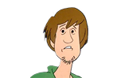

Salsicha
Rogers

Salsicha é um preguiçoso covarde mais interessado em comida do que em resolver mistérios. É o único personagem de Scooby-Doo (além de Scooby) que aparece em todas as iterações da franquia. No original, Salsicha é chamado de "Shaggy", que, em português, significa desgrenhado, desajeitado.